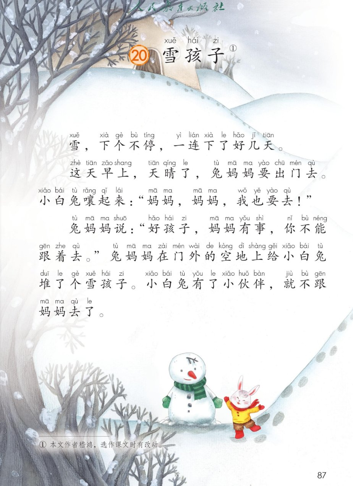
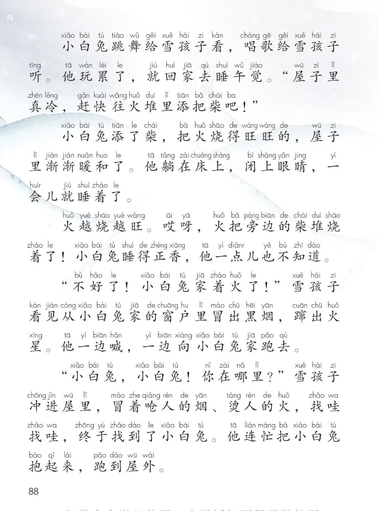
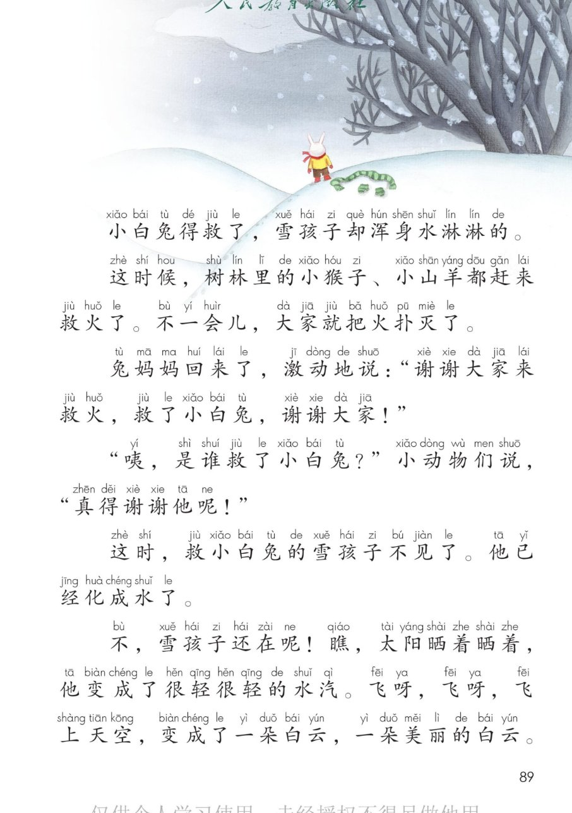
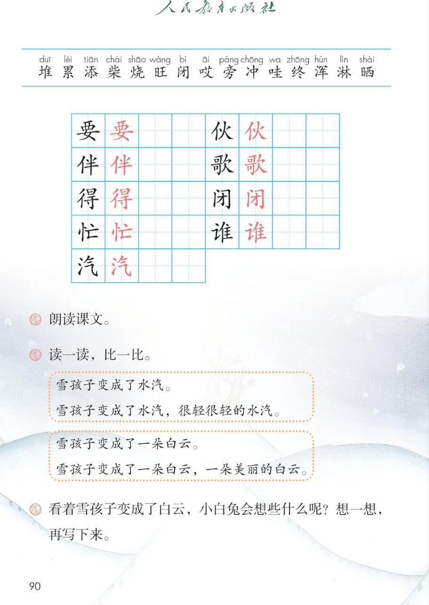

×
🔊 手机听不到声音怎么办？照这 3 步做
① 用
Edge 浏览器打开
www.jeepsh.cn（在微信里打开的点右上角「⋯ → 在浏览器打开」；没装 Edge 就到应用商店搜「Edge」安装）。
② 应用商店搜
「讯飞语记」安装 → 打开它 →
通用设置 → 语音合成设置 → 打开
「合成系统接口」和
「全局生效」两个开关 → 再选一个
中文发音人。
③ 系统语言设为
简体中文，点「
播放」试听能说中文后，
彻底关闭浏览器再重开（后台划掉），回到课件点读就有声音。
→ 打开声音自检
🐰 第 20 课《雪孩子》· 有声图文带读
统编版语文 · 第七单元·阅读 · 课本 第 87~90 页 · 本文作者嵇鸿，选作课文时有改动
课文 15 个自然段
会认字 15
会写字 9
听写词 10
近义词 4 组
深入理解 8 题
本课本领 读出雪孩子的勇敢
🎧 五步学（可随时点任意一句、一个字、一个词单独听）：
① 听读课文——15 个自然段、30 句，一句一句读；读到哪一句哪一句发光；开「跟读」后读完一句留时间让你自己读。
② 学字词——15 个会认字、9 个会写字（含书写提示），点一个读一个。
③ 词语·听写·造句——先读课后题的「读一读，比一比」，再听写 10 个词（读两遍→你写→报答案→听示范句），最后听 4 组近义词辨析。
④ 深入理解——8 道题（认知 / 理解 / 运用 / 拓展），开放题答案不唯一，先想后看。
⑤ 讲故事·分角色——按事情顺序讲雪孩子的故事，再分角色读旁白、小白兔、兔妈妈和雪孩子的话。
① 听读课文（点哪一句，读哪一句）点段前的 ①②③ 听整段
注音只标本课要认、要写的字，读音来自课本第 90 页生字表
🎤 朗读要求（老师标准）
① 读准字音，不添字、不漏字、不回读；
② 逗号稍停，句号停得长一点；
③ 小白兔的话读出着急、撒娇，兔妈妈的话读得温和；
④ “不好了！小白兔家着火了！”要读得又急又响；
⑤ 最后两个自然段读得慢一点、轻一点，读出雪孩子变成白云的样子。
①雪，下个不停，一连下了好几天。
②这天早上，天晴了，兔妈妈要出门去。
③小白兔嚷起来：“妈妈，妈妈，我也要去！”
④兔妈妈说：“好孩子，妈妈有事，你不能跟着去。”兔妈妈在门外的空地上给小白兔堆了个雪孩子。小白兔有了小伙伴，就不跟妈妈去了。
⑤小白兔跳舞给雪孩子看，唱歌给雪孩子听。他玩累了，就回家去睡午觉。“屋子里真冷，赶快往火堆里添把柴吧！”
⑥小白兔添了柴，把火烧得旺旺的，屋子里渐渐暖和了。他躺在床上，闭上眼睛，一会儿就睡着了。
⑦火越烧越旺。哎呀，火把旁边的柴堆烧着了！小白兔睡得正香，他一点儿也不知道。
⑧“不好了！小白兔家着火了！”雪孩子看见从小白兔家的窗户里冒出黑烟，蹿出火星。他一边喊，一边向小白兔家跑去。
⑨“小白兔，小白兔！你在哪里？”雪孩子冲进屋里，冒着呛人的烟、烫人的火，找哇找哇，终于找到了小白兔。他连忙把小白兔抱起来，跑到屋外。
⑩小白兔得救了，雪孩子却浑身水淋淋的。
⑪这时候，树林里的小猴子、小山羊都赶来救火了。不一会儿，大家就把火扑灭了。
⑫兔妈妈回来了，激动地说：“谢谢大家来救火，救了小白兔，谢谢大家！”
⑬“咦，是谁救了小白兔？”小动物们说，“真得谢谢他呢！”
⑭这时，救小白兔的雪孩子不见了。他已经化成水了。
⑮不，雪孩子还在呢！瞧，太阳晒着晒着，他变成了很轻很轻的水汽。飞呀，飞呀，飞上天空，变成了一朵白云，一朵美丽的白云。
课本的样子（点一张图，听读这一页）点一张图，听读整页

第 87 页 · 课题与课文前四段

第 88 页 · 雪孩子救小白兔

第 89 页 · 雪孩子变成白云

第 90 页 · 生字表与课后题
📖 人教版《语文》二年级上册 · 课本第 87~90 页 · 图片仅供个人学习，版权归人民教育出版社所有
② 会认字（15 个）点一个字，听读音、词语和课文里的句子
② 会写字（9 个）结构、部首、笔画与书写提示为通用规范，供参考，以教材和老师的指导为准
要
yào
需要 · 要好
9 画 · 上下（覀）
上扁下长，女的横要长
伙
huǒ
伙伴 · 大伙
6 画 · 左右（亻）
左窄右宽，火旁撇捺舒展
伴
bàn
伙伴 · 同伴
7 画 · 左右（亻）
左窄右宽，半的竖要长
歌
gē
唱歌 · 歌声
14 画 · 左右（欠）
哥哥写紧凑，欠的捺舒展
得
dé
得到 · 得救
11 画 · 左右（彳）
上日下寸，寸的横要长
闭
bì
闭上 · 关闭
6 画 · 半包围（门）
门框写宽，里面的才要小
忙
máng
连忙 · 帮忙
6 画 · 左右（忄）
左窄右宽，两点要分开
谁
shuí
是谁 · 谁的
10 画 · 左右（讠）
隹的四横要匀
汽
qì
水汽 · 汽车
7 画 · 左右（氵）
三点水成弧形，气要圆
③ 读一读，比一比（课后题）比一比：后一句多了什么，好在哪里
比一比 1雪孩子变成了水汽。
雪孩子变成了水汽，很轻很轻的水汽。
比一比 2雪孩子变成了一朵白云。
雪孩子变成了一朵白云，一朵美丽的白云。
③ 听写（10 个词）读两遍 → 你在纸上写 → 报答案 → 听示范句
准备听写 · 共 10 个词
○ ○ ○
点下面的「开始听写」，听到一个词就写一个词。
③ 听写的词 · 造句示范点词听读，点句子听示范句，再自己说一句
1伙伴会写字
示范句：小白兔有了小伙伴，就不跟妈妈去了。
✏️ 我也能说：谁 + 和谁 + 是小伙伴
2唱歌会写字
示范句：小白兔唱歌给雪孩子听。
✏️ 我也能说：谁 + 给谁 + 唱歌
3闭上会写字
示范句：他躺在床上，闭上眼睛。
✏️ 我也能说：什么时候 + 闭上 + 什么
4连忙会写字
示范句：他连忙把小白兔抱起来。
✏️ 我也能说：谁 + 连忙 + 做什么
5水汽会写字
示范句：雪孩子变成了很轻很轻的水汽。
✏️ 我也能说：什么 + 变成了水汽
6得救会写字
示范句：小白兔得救了，雪孩子却浑身水淋淋的。
✏️ 我也能说：谁 + 得救了
7需要会写字
示范句：小白兔需要一个小伙伴。
✏️ 我也能说：谁 + 需要 + 什么
8是谁会写字
示范句：咦，是谁救了小白兔？
✏️ 我也能说：是谁 + 做什么
9救火课文词语
示范句：小猴子和小山羊都赶来救火了。
✏️ 我也能说：谁 + 赶来 + 救火
10柴堆课文词语
示范句：火把旁边的柴堆烧着了。
✏️ 我也能说：什么旁边 + 有柴堆
③ 近义词辨析（4 组）相同点 / 不一样在哪 / 各造一句
渐渐 — 慢慢
相同：都是说不快，一点一点地变。
不一样：渐渐多写事物自己一点点变化；慢慢还能写人做事不快。
渐渐：天渐渐黑了。
慢慢：他慢慢地走过来。
连忙 — 赶快
相同：都是说动作快、不耽误。
不一样：连忙是马上就去做什么，多写对别人的反应；赶快是催着快一点。
连忙：他连忙把小白兔抱起来。
赶快：天要下雨了，赶快收衣服。
浑身 — 全身
相同：都是说整个身体。
不一样：浑身多用在不好的感觉上；全身只是说整个身体，不带感情。
浑身：他跑得浑身是汗。
全身：泡过热水，全身都暖和了。
暖和 — 温暖
相同：都是说不冷，很舒服。
不一样：暖和说的是屋子、天气不冷；温暖还能说心里的感觉。
暖和：屋子里渐渐暖和了。
温暖：老师的笑让人感到温暖。
③ 词语拓展（说一说，记一记）
很轻很轻（叠词，写出程度）很轻很轻的水汽 很白很白的雪 很红很红的苹果
一边…一边…（两个动作同时做）他一边喊，一边向小白兔家跑去。
找哇找哇（…哇…哇，动作反复）找哇找哇 跑哇跑哇 写哇写哇
水淋淋（ABB 式，写样子）水淋淋 湿漉漉 亮晶晶 绿油油
④ 深入理解（8 题 · 先想后看）标「答案不唯一」的题，说得有道理都对
认知雪孩子是谁堆的？堆在哪儿？
看解析
🤔 想一想
解析：
课文第四自然段说：兔妈妈在门外的空地上给小白兔堆了个雪孩子。
堆雪孩子，是妈妈想给小白兔留一个小伙伴，让他不孤单。
💡 找答案先找两个信息：谁做的，在哪儿做的
认知家里着火的时候，雪孩子是怎么做的？按顺序说一说。
看解析
🤔 想一想
解析：
先：看见黑烟火星，一边喊一边跑
再：冲进屋里，找哇找哇
最后：抱起来，跑到屋外
💡 说事情用上先、再、最后，别人一听就明白
理解小白兔家为什么会着火？
看解析
🤔 想一想
解析：
添柴：屋子里真冷，小白兔往火堆里添了把柴。
火旺：火越烧越旺，把旁边的柴堆也烧着了。
没人发现：小白兔睡得正香，一点儿也不知道。
💡 一件事有原因，往前找一找：谁做了什么
理解雪孩子是雪做的，最怕火，为什么还要冲进屋里？
看解析
🤔 想一想
解析：
雪孩子是雪做的，一见热就会化。
可他先想到的是小白兔，不是自己。
这就是勇敢：心里害怕，还是去做该做的事。
💡 看一个人，不看他怕什么，看他在怕的时候还做了什么
理解小白兔得救了，雪孩子为什么浑身水淋淋的？
看解析
🤔 想一想
解析：
雪遇到热就化成水。
水被太阳一晒，又变成水汽飞到天上。
所以雪孩子不是没有了，他换了个样子还在。
💡 想一想雪遇到热会怎么样，就明白了
运用读一读，比一比。照样子把句子说具体：树上挂着苹果。
看解析
🤔 想一想
解析：
加上样子：树上挂着苹果，一个又大又红的苹果。
加上味道：树上挂着苹果，一个香香甜甜的苹果。
💡 在后面再加一个什么样的，句子就具体了
🌈 答案不唯一，说清什么样的苹果都对
运用看着雪孩子变成了白云，小白兔会想些什么呢？（课后想一想，再写下来）
看解析
🤔 想一想
解析：
谢谢他：雪孩子，谢谢你救了我，我会一直记得你。
想他：你变成白云了，我每天抬头就能看见你。
盼他：明年下雪，我再堆一个雪孩子，还跟你一起玩。
💡 把心里的话写下来，先写谢谢，再写想他，最后写盼他
🌈 答案不唯一，写出自己的心里话就是好句子
拓展如果身边有人遇到危险，我们应该怎么帮？
看解析
🤔 想一想
解析：
先保护自己：不冒险，不自己冲进火里。
快求救：大声喊大人，或者打一一九。
说清楚：在什么地方、发生了什么事。
💡 勇敢不等于蛮干，会求救也是本事
🌈 答案不唯一，说清先做什么、再做什么就很好
⑤ 按事情顺序讲故事点一张卡，听这一步
💬 讲故事支架：先说谁要出门（兔妈妈）→ 再说小白兔有了什么（雪孩子这个小伙伴）→ 接着说家里出了什么事（柴堆烧着了）→ 然后说谁来救人（雪孩子冲进屋里）→ 最后说结果（化成水，变成白云）。
⑤ 分角色朗读（课文里人物多，分着读更有味道）点一张卡，听这一段怎么读
📖 旁白·开头
雪，下个不停，一连下了好几天。
这天早上，天晴了，兔妈妈要出门去。
💬 要读得慢一点、清楚，像讲故事的开头
🐰 小白兔
“妈妈，妈妈，我也要去！”
“屋子里真冷，赶快往火堆里添把柴吧！”
💬 要读出撒娇、着急的语气，第二句读出冷得发抖
👩 兔妈妈
“好孩子，妈妈有事，你不能跟着去。”
“谢谢大家来救火，救了小白兔，谢谢大家！”
💬 前一句温和，后一句又急又感激
⛄ 雪孩子
“不好了！小白兔家着火了！”
“小白兔，小白兔！你在哪里？”
💬 要读得又急又响，第二句一声比一声急
📖 旁白·堆雪人
兔妈妈在门外的空地上给小白兔堆了个雪孩子。
小白兔有了小伙伴，就不跟妈妈去了。
小白兔跳舞给雪孩子看，唱歌给雪孩子听。
💬 读得轻松、高兴，渐渐暖和了要读得舒服
📖 旁白·着火
火越烧越旺。
哎呀，火把旁边的柴堆烧着了！
雪孩子冲进屋里，冒着呛人的烟、烫人的火……
💬 越读越急，找哇找哇要读慢，跑去了要读快
🐒 小动物们
“咦，是谁救了小白兔？”
小动物们说，“真得谢谢他呢！”
💬 咦要读得好奇，问句往上扬
📖 旁白·结尾
小白兔得救了，雪孩子却浑身水淋淋的。
他已经化成水了。
不，雪孩子还在呢！他变成了一朵美丽的白云。
💬 先慢下来、轻下来，最后一句要读得又轻又美